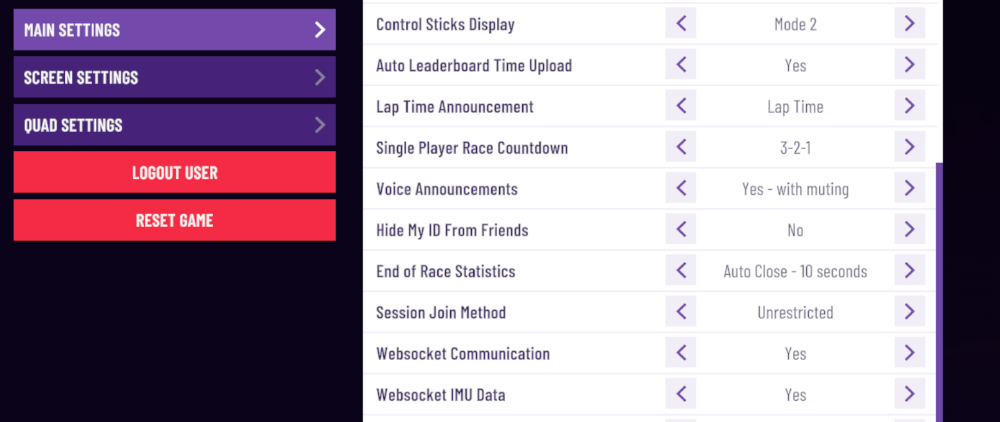
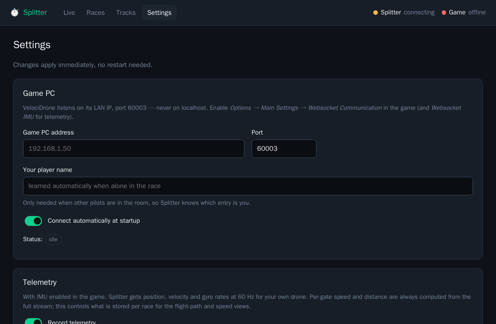
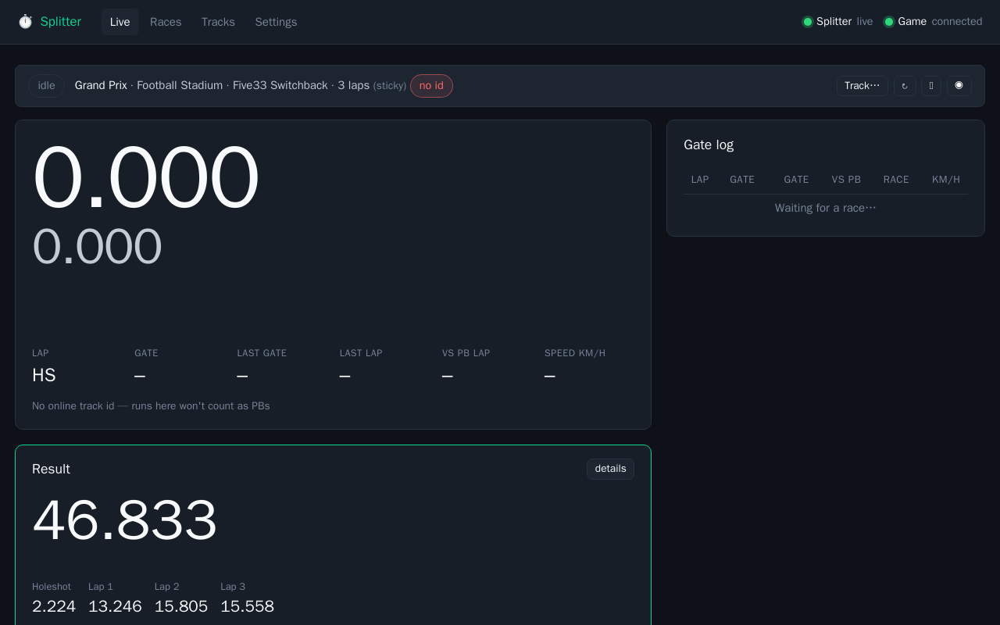
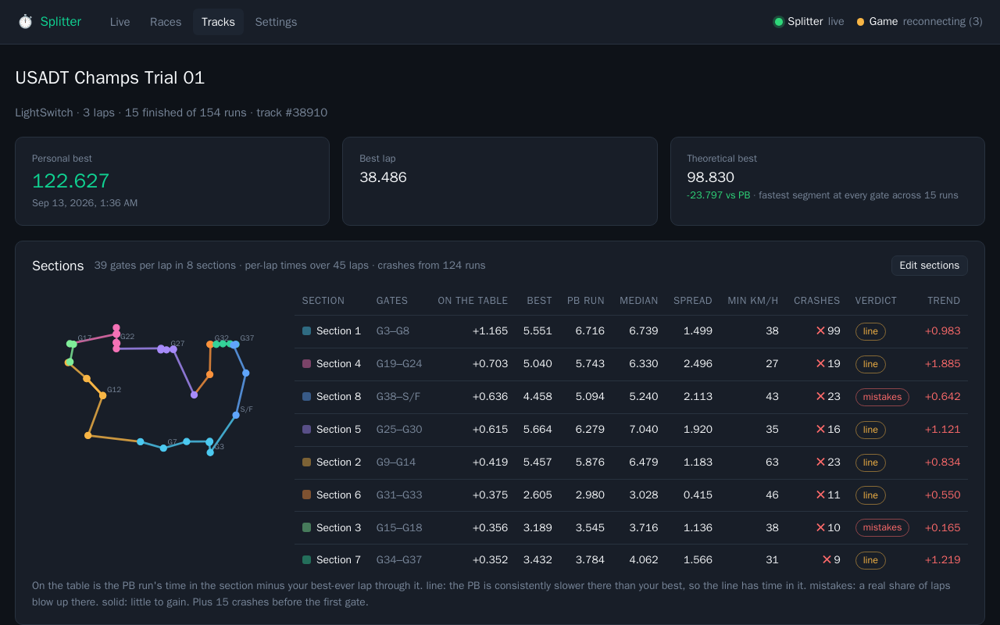

A lap timer for VelociDrone that watches you fly. Gate-by-gate splits against your personal best while you race, every run saved, and afterwards a clear picture of which parts of the track cost you time and where you crash. Windows quick start, about 10 minutes.
1. Start Splitter
Make a folder for it, for example Documents\Splitter, and put splitter-windows-x64.exe inside. Splitter keeps all your runs in a splitter-data folder that appears next to the exe, so keep the two together.
Double-click the exe. The first launch takes a few seconds while it unpacks.
If Windows shows “Windows protected your PC”, click More info, then Run anyway. The beta is not code-signed yet, which is all that warning means.
Because it is not signed, Microsoft Defender may also flag or remove the exe when you copy or download it. If it does, open Windows Security → Virus & threat protection → Protection history, find the Splitter entry, choose Actions → Allow, then copy the exe into the folder again. It should stay put after that.
If the Windows Firewall asks, click Allow access. That only matters if you want to watch the timer on a phone or tablet (section 6); Cancel is fine otherwise.
A Splitter window opens on the Live page. Closing that window stops the timer.
2. Turn on the game's data feed (once)
VelociDrone can send race and telemetry data to tools like Splitter, but it is off by default.
In VelociDrone open Options → Main Settings.
Set Websocket Communication to Yes.
Set Websocket IMU Data to Yes as well. Both rows are at the bottom of the list. This adds speed, position and crash data. It only works when your quad uses the Betaflight flight controller model.
Restart VelociDrone. The game reads these settings when it starts, so the change does nothing until you do.

123
1 Options → Main Settings. Scroll to the bottom of the list. 2 Websocket Communication → Yes. 3 Websocket IMU Data → Yes.
3. Point Splitter at the game
The game only listens on your PC's network address, never on “localhost”, so Splitter needs to know that address even though both run on the same machine.
Find your PC's address: press Win + R, type cmd, press Enter, then type ipconfig and press Enter. Look for IPv4 Address under your Wi-Fi or Ethernet adapter. It looks like 192.168.1.23.
In Splitter open the Settings page (top menu).
Type that address into Game PC address. Leave Port at 60003.
Put your VelociDrone pilot name in Your player name. It is only used to pick you out when other pilots are in a room, but set it now so it is there.
Click Save.

The Settings page. Only the top three fields matter for the beta.
With VelociDrone running and the feed turned on, the top-right corner of every Splitter page shows Game connected with a green dot. If it says offline or reconnecting, check that the game is running, that you restarted it after step 2, and that the address is right.
Two dots in the corner.Splitter is the page's own link to the timer, Game is the timer's link to VelociDrone. Both should be green while you fly.
4. Fly
On the Live page tap Track… and search for the track you are about to fly, then pick it. The game never says which track you are on in single player, so this is how Splitter knows. It remembers your pick until you change it.
Start a race in the game as normal. Splitter shows the countdown, then the race clock.
The big clock is coloured by how you are doing against your personal best on that track: green ahead, yellow close, red behind. Each gate you pass adds a line to the gate log with the split.
When you finish, the result card shows your laps and whether it was a new personal best.

The Live page between runs: the track picked, the last result below the clock, and the gate log on the right.
Timer stuck? If you quit the game mid-run, Splitter aborts the run by itself after about ten seconds. You can also tap the red Abort button next to the clock at any time, which ends the run in Splitter and in the game.
Personal bests need a track. A run flown without picking a track is still saved, but it cannot become a personal best, and the clock has nothing to compare against. You can fix the track later on the Races page.
5. Look at your flying afterwards
Page
What it shows
Races
Every run. Open one for the lap times, a top-down flight path coloured by speed, a speed graph, and a Sections table that compares each part of the track with your personal best, lap by lap. Crashes are marked with a red ✕.
Tracks
One entry per track and quad. Your personal best, how your times have moved run over run, and the Sections table: for each part of the track, how much time is “on the table” compared with your best-ever lap through it, how consistent you are, your slowest speed, how often you crash there, and a verdict of line (the line has time in it), mistakes (you blow it up sometimes) or solid.
Settings
The game address, your name, and display options such as the time format.

The Tracks page for one track. Sections are suggested automatically from your flying; Edit sections lets you split, merge and name them.
6. Optional: watch on a phone or tablet
While the Splitter window is open, any phone or tablet on the same Wi-Fi can open http://YOUR-PC-ADDRESS:8100/ in its browser, using the address from step 3, for example http://192.168.1.23:8100/. The Live page has a fullscreen button that hides everything but the clock. This needs the firewall permission from step 1.
7. When something goes wrong
This is a beta, so please tell me about anything odd. The most useful report has three things:
What you did and what you expected, in a sentence or two.
A screenshot of the Splitter page, if it looks wrong.
The log file: splitter-data\splitter-desktop.log, next to the exe.
Known limits in this beta
The exe is not code-signed, so Windows warns on first run and Defender may flag it (section 1).
In single player you must pick the track yourself (step 4). Hosted multiplayer rooms report it automatically.
Speed, flight path and crash detection need Websocket IMU Data on and the Betaflight flight controller model.
Closing the Splitter window stops the timer. Runs already saved are kept in splitter-data.